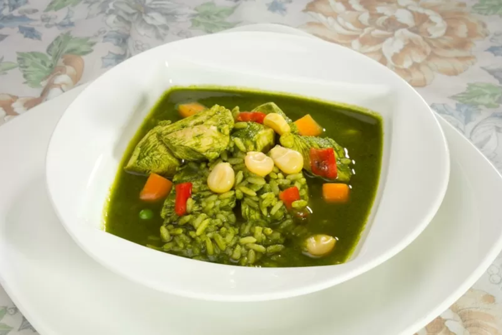

Aguadito (Tiny Watery)

Description
El Aguadito de pollo está en la categoría de sopas contundentes y suculentas, llenas de sabor y variadas texturas. Un platón de este potaje es una comida completa que no necesita de nada más. Quizás solo de un pequeño postre. Es la clase de sopa conocida como «levanta-muertos» y, literalmente, tiene ese efecto en mucha gente que la toma de madrugada después de una larga noche de fiesta, pues es energizante y le cae super bien al cuerpo.
Ingredients
- 4 piernas de pollo (o pechuga)
- Sal y pimienta
- ¼ aceite vegetal
- ½ taza de cebolla picada
- 2 dientes de ajo picados
- 2 ajíes amarillos frescos, picados o 3 cucharas de pasta de ají
- 2 tazas de hojas de culantro -sin los tallos, por favor
- 4 tazas de caldo de pollo
- 1 taza de cerveza negra (opcional)
- ½ pimiento rojo picado en tiras
- 1 zanahoria picada en cubitos
- 1 taza de choclo desgranado
- ½ taza de arroz blanco
- 4 papas amarillas medianas, peladas
- ½ taza de alverjitas
Steps
- Salpimienta el pollo. Calienta el aceite en una olla a fuego medio y dora el pollo sin dejarlo cocer mucho. Transfiere a un plato y mantén caliente.
- En la misma grasa sofríe la cebolla y el ajo hasta que se vea suave y ligeramente dorada la cebolla.
- Mientras tanto procesa el ají con las hojas de culantro y ¼ taza de agua en la licuadora. Agrega junto con el caldo a la mezcla de cebollas y ajos. Revuelve bien.
- Incorpora la cerveza, pollo, pimiento, zanahorias y choclo. Lleva a ebullición, baja el fuego al mínimo, y cocina con la tapa puesta unos 30 minutos.
- Ojo: si estás usando pechuga de pollo no la agregues hasta este momento, o si ya la pusiste, retírala y mantenla caliente en un plato para que no se recocine. preheated oven for 25 minutes. Remove the foil and bake for an additional 25 minutes. Rest lasagna for 15 minutes before serving.
- Incorpora el arroz y las papas y cocina hasta que estén suaves. Si la sopa está demasiado espesa agrega más caldo.
- Corrige la sazón y sirve de inmediato.